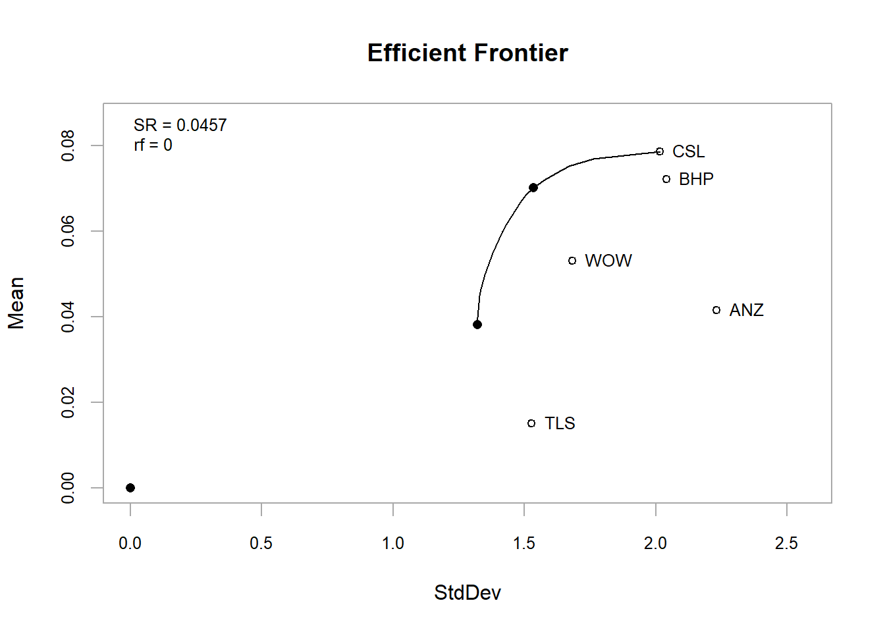

12.6 Efficient (Minimum Variance) Portfolio using R packages
- R’s PortfolioAnalytics package provides various tools for portfolio anlaytics including minimum variance portfolio optimisation
- Create random portfolios based on risk (Std. Dev.) and reward (mean return)
- Full investment: Allocate in all the assets (minimum 0 and maximum 1 weight)
- Long only: Only buy, no short position (positive weights only)
library(PortfolioAnalytics)
# initialise with asset names uses time series data
data_p2 = zoo(ret1[, -1], order.by = as.Date(ret1$Date))
# create specification
port = portfolio.spec(assets = c(colnames(data_p2)))
# add long only constraint
port = add.constraint(portfolio = port, type = "long_only")
# add full investment contraint
port = add.constraint(portfolio = port, type = "full_investment")
# objective: manimise risk
port_rnd = add.objective(portfolio = port, type = "risk", name = "StdDev")
# objective: maximise return
port_rnd = add.objective(portfolio = port_rnd, type = "return", name = "mean")
# 1. optimise random portfolios
rand_p = optimize.portfolio(R = data_p2, portfolio = port_rnd, optimize_method = "random",
trace = TRUE, search_size = 1000)
# plot
chart.RiskReward(rand_p, risk.col = "StdDev", return.col = "mean", chart.assets = TRUE) #also plots the equally weighted portfolio
Figure 12.5: Mean-Variance Portfolios
- Optimise for minimum risk
- Minimise the level of Standard Deviation for the portfolio
port_msd = add.objective(portfolio = port, type = "risk", name = "StdDev")
minvar1 = optimize.portfolio(R = data_p2, portfolio = port_msd, optimize_method = "ROI",
trace = TRUE)
minvar1***********************************
PortfolioAnalytics Optimization
***********************************
Call:
optimize.portfolio(R = data_p2, portfolio = port_msd, optimize_method = "ROI",
trace = TRUE)
Optimal Weights:
BHP ANZ WOW TLS CSL
0.1437 0.0735 0.3122 0.4543 0.0164
Objective Measure:
StdDev
1.32 # plot
plot(minvar1, risk.col = "StdDev", main = "Mean Variance Portfolio", chart.assets = TRUE)
Figure 12.6: Mean Variance Portfolio Risk/Return
# efficient frontier
minvar_ef = create.EfficientFrontier(R = data_p2, portfolio = port_msd,
type = "mean-StdDev")
chart.EfficientFrontier(minvar_ef, match.col = "StdDev", type = "l", tangent.line = FALSE,
chart.assets = TRUE)

Figure 12.7: Efficient Frontier
- The fPortfolio package also provides functions to conduct the optimisation
- An ebook is available with further details on the fPortfolio package see here https://www.rmetrics.org/ebooks-portfolio
library(fPortfolio)
data_p2 = as.timeSeries(data_p2)
pspec = portfolioSpec() #initial specification
setNFrontierPoints(pspec) = 500 #random portfolios for the efficient frontier
eff_front2 = portfolioFrontier(data_p2, constraints = "LongOnly") #strategy
plot(eff_front2, c(1, 2, 4, 5, 6))
Figure 12.8: Efficient frontier plot (fPortfolio)
- Another function (allows to add different points and lines from other portfolios)
- Also plots of the weights in different portfolios
tailoredFrontierPlot(eff_front2, sharpeRatio = FALSE, risk = "Sigma")
Figure 12.9: Efficient Frontier
# weights
weightsPlot(eff_front2)
Figure 12.10: Weights Plot
12.6.1 Minimum Variance and portfolio for a given level of return
- Minimum variance
- Uses previous constraints (Long Only)
(minvar2 = minvariancePortfolio(data_p2))
Title:
MV Minimum Variance Portfolio
Estimator: covEstimator
Solver: solveRquadprog
Optimize: minRisk
Constraints: LongOnly
Portfolio Weights:
BHP ANZ WOW TLS CSL
0.1437 0.0735 0.3122 0.4543 0.0164
Covariance Risk Budgets:
BHP ANZ WOW TLS CSL
0.1437 0.0735 0.3122 0.4543 0.0164
Target Returns and Risks:
mean Cov CVaR VaR
0.0382 1.3204 3.2805 2.0550
Description:
Sun Nov 6 11:44:36 2022 by user: RMachine - Target Return
mu = mean(colMeans(data_p2)) #target return
setTargetReturn(pspec) = mu
(eff_port2 = efficientPortfolio(data_p2, pspec))
Title:
MV Efficient Portfolio
Estimator: covEstimator
Solver: solveRquadprog
Optimize: minRisk
Constraints: LongOnly
Portfolio Weights:
BHP ANZ WOW TLS CSL
0.2364 0.0342 0.3425 0.2360 0.1510
Covariance Risk Budgets:
BHP ANZ WOW TLS CSL
0.2563 0.0326 0.3439 0.1994 0.1677
Target Returns and Risks:
mean Cov CVaR VaR
0.0521 1.3608 3.4011 1.9698
Description:
Sun Nov 6 11:44:36 2022 by user: RMachine 12.6.2 Portfolio with Box Constraints
- We can add box constraints to setup minimum weights so that we invest in each stock in the portfolio.
- This can be achieved using both packages.
- Here we demonstrate using the fPortfolio package. See help(box_constraints) for PortfolioAnalytics package
pspec2 = portfolioSpec()
setNFrontierPoints(pspec) = 500
boxconstraints = c("minW[1:5]=0.1", "maxW[1:5]=1") #for minimum asset weights and maximum asset weights
eff_front3 = portfolioFrontier(data_p2, spec = pspec2, constraints = boxconstraints)
eff_front3
Title:
MV Portfolio Frontier
Estimator: covEstimator
Solver: solveRquadprog
Optimize: minRisk
Constraints: minW maxW
Portfolio Points: 5 of 24
Portfolio Weights:
BHP ANZ WOW TLS CSL
1 0.1000 0.1000 0.1248 0.5752 0.1000
6 0.1160 0.1000 0.2713 0.4127 0.1000
12 0.1900 0.1000 0.3253 0.2611 0.1236
18 0.2323 0.1000 0.3382 0.1292 0.2003
24 0.2558 0.1000 0.1000 0.1000 0.4442
Covariance Risk Budgets:
BHP ANZ WOW TLS CSL
1 0.0922 0.0983 0.1022 0.6022 0.1052
6 0.1136 0.1040 0.2662 0.4063 0.1099
12 0.2038 0.1069 0.3268 0.2270 0.1354
18 0.2495 0.1038 0.3270 0.0972 0.2225
24 0.2495 0.0917 0.0711 0.0669 0.5209
Target Returns and Risks:
mean Cov CVaR VaR
1 0.0346 1.3525 3.2604 2.0459
6 0.0410 1.3280 3.3011 2.0827
12 0.0488 1.3482 3.3697 1.9793
18 0.0566 1.3977 3.4827 2.0566
24 0.0644 1.5223 3.7541 2.2943
Description:
Sun Nov 6 11:44:36 2022 by user: RMachine plot(eff_front2, c(1, 2, 4, 5, 6))
Figure 12.11: Frontier Plot (box constraints)
(minvar3 = minvariancePortfolio(data = data_p2, spec = pspec2, constraints = boxconstraints))
Title:
MV Minimum Variance Portfolio
Estimator: covEstimator
Solver: solveRquadprog
Optimize: minRisk
Constraints: minW maxW
Portfolio Weights:
BHP ANZ WOW TLS CSL
0.1179 0.1000 0.2728 0.4093 0.1000
Covariance Risk Budgets:
BHP ANZ WOW TLS CSL
0.1158 0.1041 0.2680 0.4021 0.1099
Target Returns and Risks:
mean Cov CVaR VaR
0.0412 1.3280 3.3025 2.0801
Description:
Sun Nov 6 11:44:37 2022 by user: RMachine